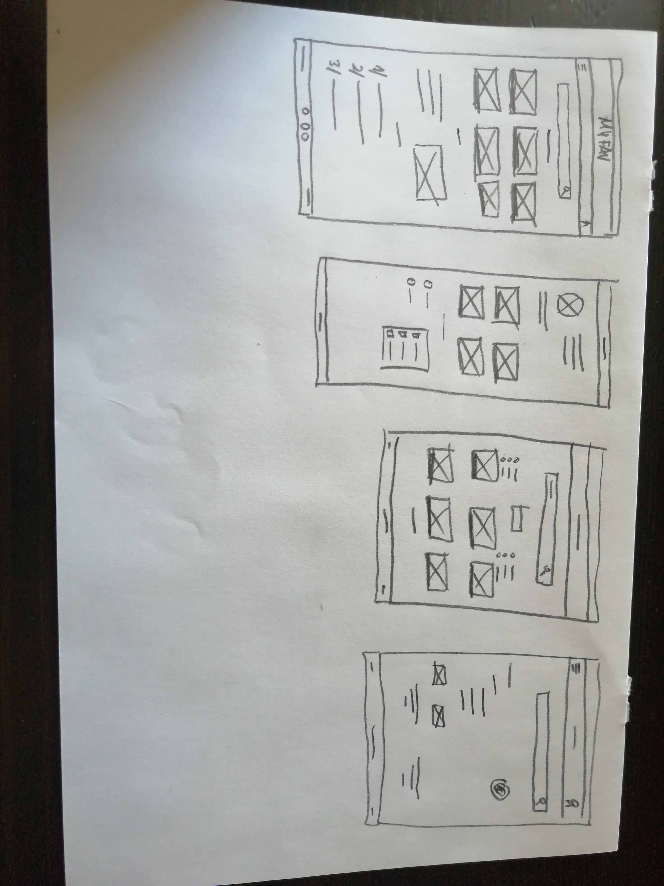
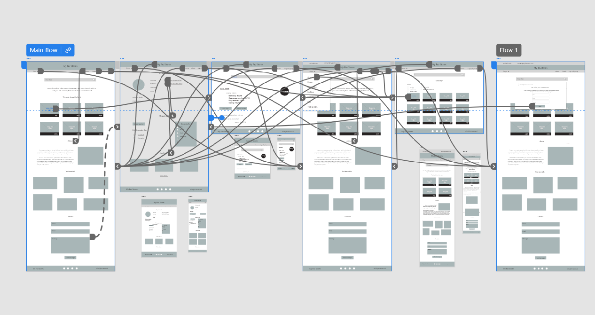

MyFavsStores
case study
MyFavsStores collects information about the best, most liked and recommended stores on the internet.
Project duration: January - March 2022
My role: UX researcher, UX designer
Responsibilities: user research, wireframing, prototyping, testing
Project overview
The problem:
- Online shopping is still a difficult experience for many people, they are afraid of their payment security and that the product will differ from reality.
The goal:
- MyFavsStores collects ratings and recommendations for online stores and creates their collective ratings. Since each of us likes to shop in stores with friendly and helpful staff, we would like to receive the shipment quickly and feel safe.
User research: summary
- I conducted interviews and created empathy maps to understand the users I’m designing for and their needs.
- The main group of users identified by the research - a group of adults of all ages, including elderly people with little internet experience and people with little free time.
- This group of users confirmed the initial assumptions that despite the increasing popularity of online shops, there is still a large group of people who are afraid to shop online.
User research: pain points
-
1
Time
Working adults or single parents are too busy to spend time shopping in ordinary stores
-
2
Finding/delivery
Looking for a safe and friendly online store on your own takes too long
-
3
Customer service
The fear that if the product does not meet the expectations, its return will be impossible, it will be very difficult
-
4
Safety
Fear for the safety of your own money, that some bad people will intercept your credit card details, etc.
Persona: Henry Distrustful
Link to info: Click here

Problem statement: Henry is an elderly man with little internet experience who wants to make safe and easy online shopping because he does not like shopping, he wants to have peace and more time for his wife.
User journey map I created a user journey map of Henry’s experience using the site to help identify possible pain points and improvement opportunities. The main goal is how to make online shopping a pleasant experience for Henry.
Link to info: Click here
Starting the design
Paper wireframes: Taking the time to draft iterations of each screen of the app on paper ensured that the elements that made it to digital wireframes would be well-suited to address user pain points. For the home screen, I prioritized a quick and easy ordering process to help users save time - the answer was the idea that the search engine should be large and visible.
Paper wireframe screen size variation(s): Many customers make online purchases on mobile devices, so it turned out to be necessary to adapt the design so that it was responsive and it was possible to use the website also on smaller screens.
Digital wireframes: The process of arranging design elements and information was based on user journey research.
- A. Large and visible search field
- B. Top stores featured on the cover page project.
- C. Responsiveness of websites and their adaptation to different screen sizes is nowadays a necessity, not just a nice addition.
Low fidelity prototype:
Using the completed set of digital wireframes, I created a low-fidelity prototype. Quite quickly, I gave up the startup screens and made a few minor visual changes
Link to desktop version prototype
Usability study: parameters
-
1
Study type:
Moderated usability study
-
2
Location:
United States, 01.03.2022, conducted remotely
-
3
Participants:
5 participants, two males, two females, and one nonbinary individual between the ages of 20 and 75. Two people from a larger city, three people from smaller towns. One participant is a person with a visual impairment.
-
4
Length:
Each session will last about 15 minutes, and will include an introduction, a list of tasks, and a short questionnaire.
Usability study: findings
I conducted two rounds of usability studies. Findings from the first study helped guide the designs from wireframes to mockups. The second study used a low-fidelity prototype and revealed what aspects of the mockups needed refining.
-
1
For most users searching for information on the website is difficult and unclear, the search model on the website should be fundamentally rebuilt.
-
2
For most users there is a big problem with information flow and architecture, it is necessary to create additional subpages.
-
3
Most of the participants saw no point in creating their own user account, there must be a clear information on the website that it is not necessary to create a user account, but its creation provides additional benefits.
-
4
Most of the participants had trouble noticing the add to favorites button, the add to favorites button should be larger and more visible. y
-
5
Some of the participants clicked on the name of the store to go to it, the name of the store should also be a link to it.